Einführung WFL M35
1 Einführung WFL M35
Die folgenden Beschreibung zeigt oberflächlich die grundsätzliche Bedienung der CNC-Maschine WFL M35 im TEC-Lab.
Anmerkung: Alle Angaben ohne Gewähr!
1.1 Einrichten der Maschine
1.1.2 Startup Abwarten
Warten bis die Maschine hochfährt
Dieser Vorgang dauert üblicherweise ein paar Minuten. Im Bedien-Terminal sollte keine Fortschrittsanzeige mehr zu sehen sein.
1.1.3 Notaus Deaktivieren
Darauf achten, dass der „Notaus“-Schalter deaktiviert ist
Der Schalter sollte „heraus-gedreht“/„gezogen“ werden, falls das nicht der Fall ist.
1.1.4 Reset/Power
Bei der Initialisierung kann es nicht schaden
- den grünen Power-Button
- und danach Reset zu drücken.
Diese Schalter befinden sich rechts unter dem „Notaus“:
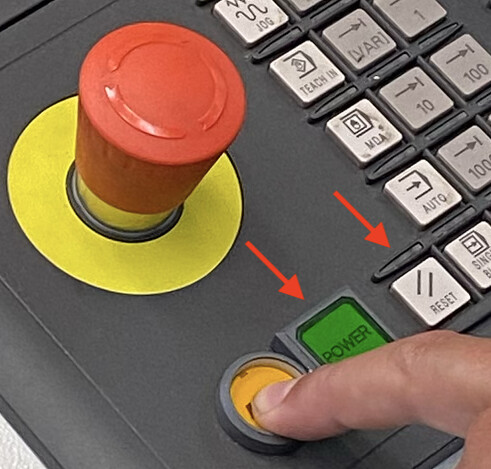
1.1.5 Haupttüre Initialisieren
Die Haupt-Türe muss am Anfang geöffnet und geschlossen werden
Dazu muss man den „Zweihand-Taster“ betätigen und dann den Schiebeschalter für die Tür:
- nach links bewegen um die Tür zu öffnen und dann
- nach rechts bewegen um die Tür zu schließen.
1.1.6 Werkzeuglader-Türe Initialisieren
Die Türe vom Werkzeuglader muss händisch geschlossen und geöffnet werden. Danach sollten die beiden gelben Schalter unter dem Werkzeuglader nicht mehr leuchten.
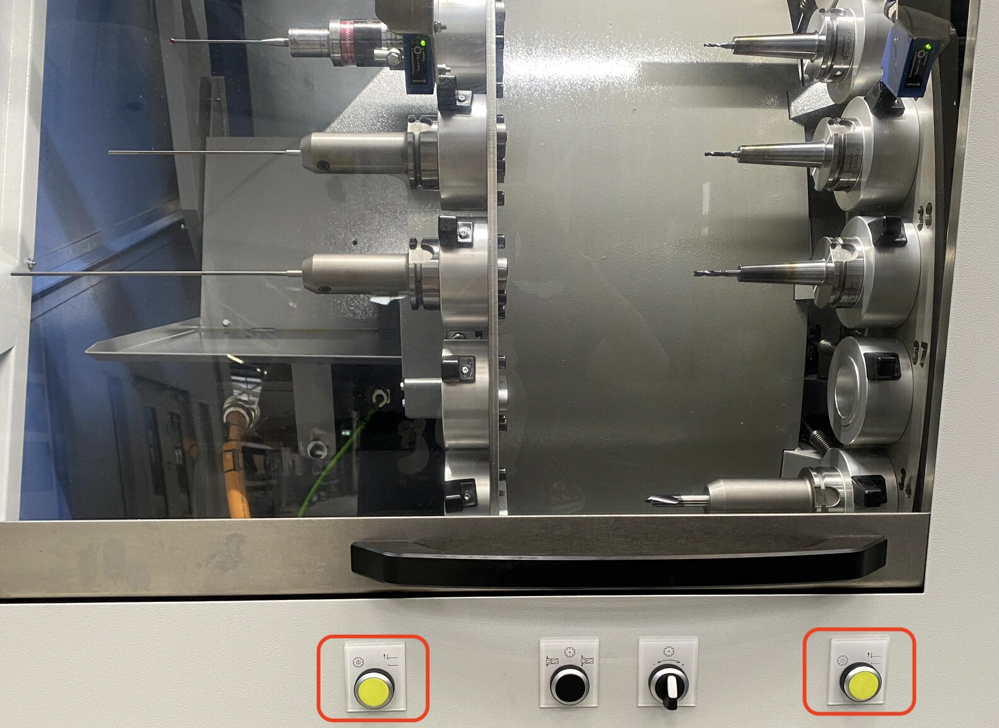
1.1.7 Werkzeuglader Initialisieren
Um den Werkzeuglader zu initialisieren sollte als erstes der Button Wkz-Lader Reset und dann Wkz-Lader Start gedrückt werden:
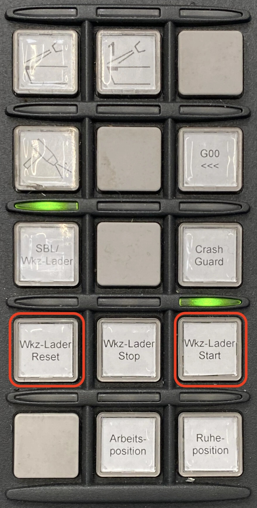
1.1.8 Referenzpunkte setzen
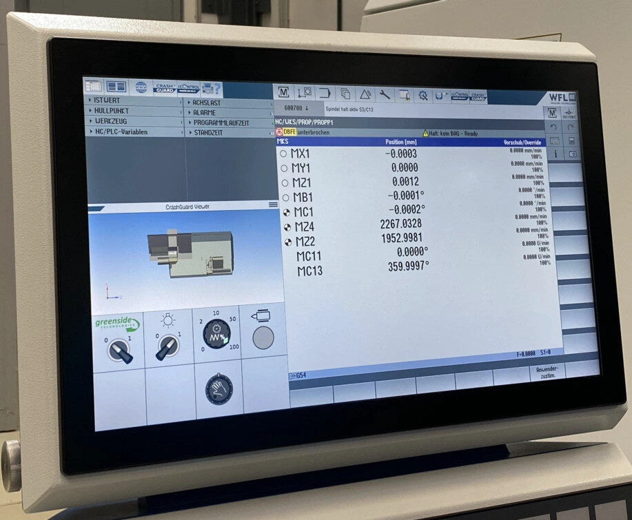
Zum Setzen der Referenzpunkte muss man die jeweilige Achse für den Punkt aktivieren und dann mittels Betätigung des Buttons + oder - zum nächsten Referenzpunkt fahren. In der unteren Beispiel-Grafik ist die Achse B1 aktiviert:
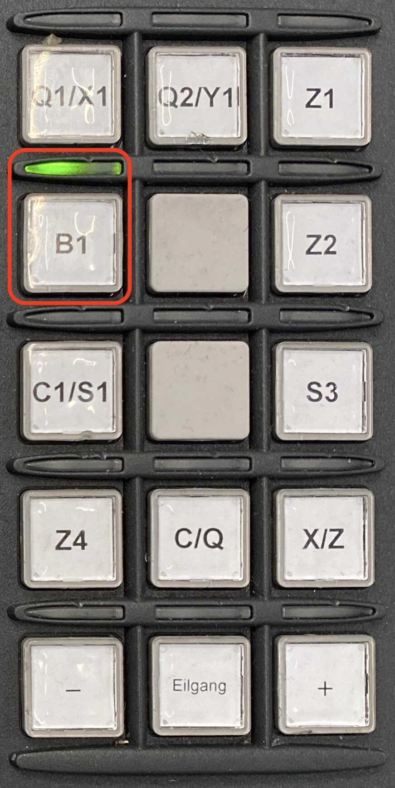
Bei den doppelt belegten Tasten z.B. Q1/X1 oder Q2/Y1 sollte darauf geachtet werden, dass die Taste C/Q nicht aktiviert ist (Licht ausgeschalten). Ansonsten wird bei den erwähnten Beispiel-Tasten Q1 beziehungsweise Q2 aktiviert obwohl man eigentlich die Achse X1 beziehungsweise X2 auswählen wollte.
Beim Drücken der Tasten + oder - sollte beachtet werden, dass der Weg in die jeweilige Richtung frei ist! Im Zweifelsfall sollte jeweils die Richtung, mittels +/- gewählt werden, bei dem mehr Platz zum Fahren frei ist. Die Orientierung der Achsen ist dabei auf dem Schlitten zu sehen:
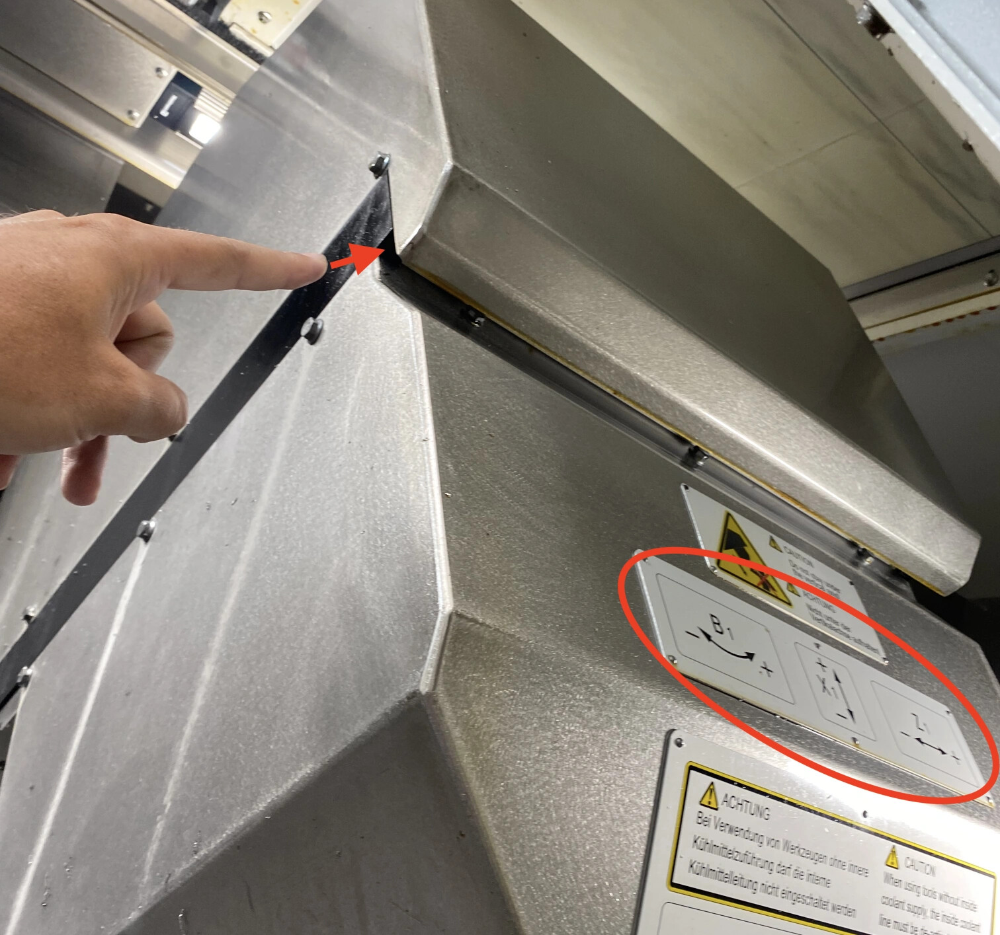
Im obigen Bild ist die Fahrt in Richtung Y1 praktisch nur mittels - möglich, da der Schlitten ansonsten in den Gummipuffer fährt.
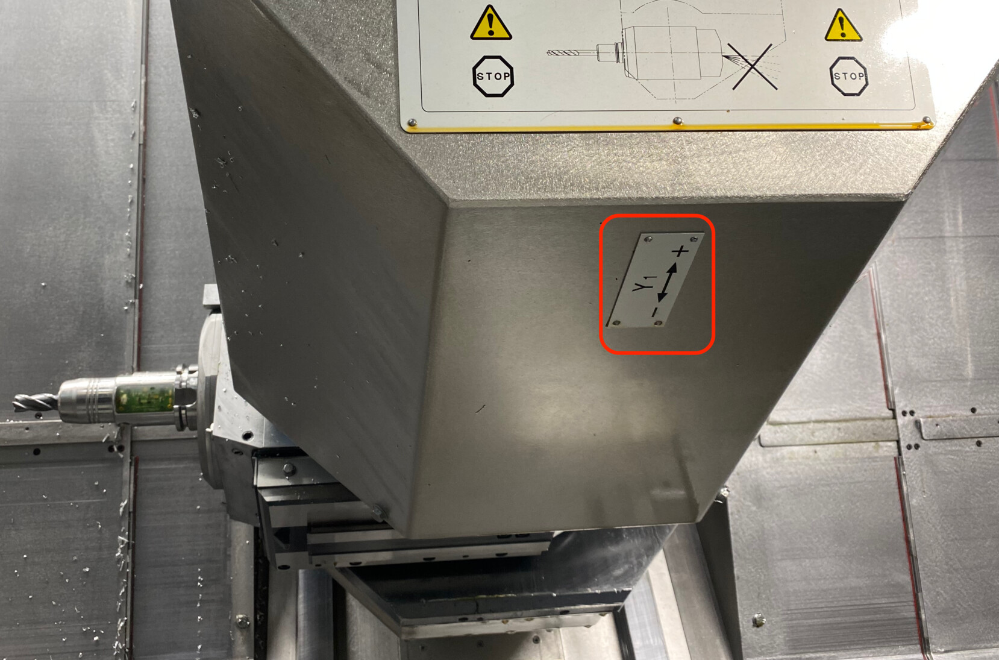
Die Referenzpunkte kann man beispielsweise in der Reihenfolge anfahren die am am Display angezeigt wird:
Referenzpunkt für Achse X1 (Oben/Unten) anfahren:
- Button Q1/X1 drücken
- Button C/Q sollte nicht aktiviert sein
- + oder - drücken, je nachdem in welche Richtung mehr Platz frei ist
Referenzpunkt für Achse Y1 (Schräg „oben vorne“/„unten hinten“) anfahren (hier ist ein Anfahren mittels + meist nicht möglich):
- Button Q2/Y1 drücken
- Button C/Q sollte nicht aktiviert sein
- + oder - drücken, je nachdem in welche Richtung mehr Platz frei ist
Referenzpunkt für Achse Z1 (links/rechts) anfahren
- Button Z1 drücken
- + oder - drücken, je nachdem in welche Richtung mehr Platz frei ist
Referenzpunkt für Achse B1 (Schwenk links/rechts) anfahren
- Button B1 drücken
- Button + oder - drücken; Auch beim Drücken der Taste + sollte sich hier der Kopf in die Richtung - bewegen
1.2 Problembehandlung
1.2.1 Spannfutter-Modus-Schalter Blinkt
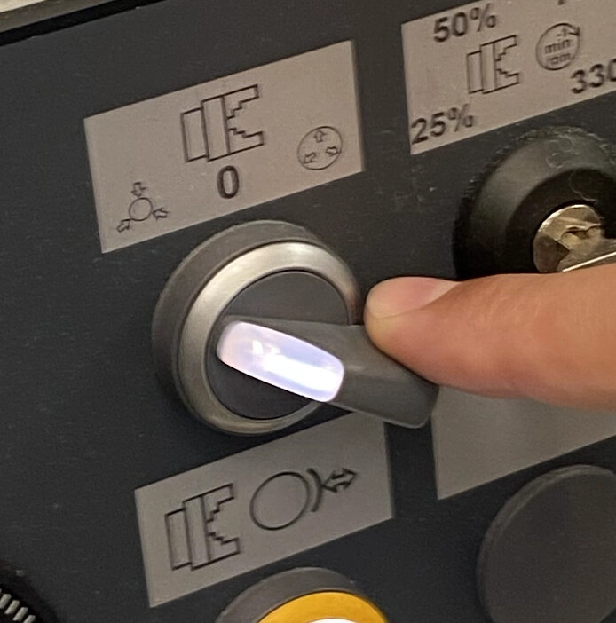
Auch wenn man kein Werkstück einspannen will (Schalterstellung 0) muss der Alarm trotzdem deaktiviert werden. Dazu kann man folgende Schritte der Reihe nach abarbeiten:
Spannfutter-Modus-Schalter auf „Außen-Spannen“ stellen:
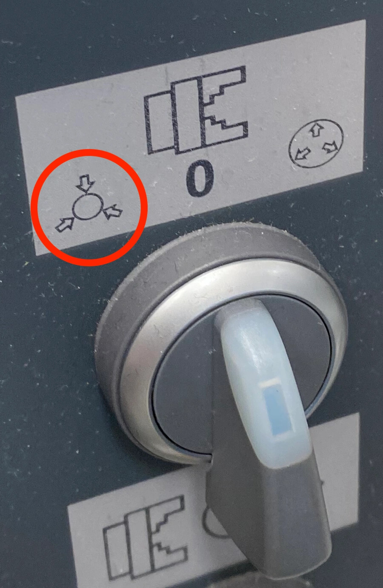
Fußschalter mit Spannfuttersymbol benützen um die Werkstückaufnahme ganz zu öffnen

Hierbei ist zu beachten, dass die zwei Schalter links und rechts eine Doppelfunktion besitzen. Während ein leichtes Drücken die Werkstückaufnahme öffnet oder schließt, sorgt ein fester Druck dafür, dass der „Notaus“ aktiviert wird. Sollte versehentlich der Notaus aktiviert worden sein, kann man diesen mittels der dunkelgrünen Schalter am vorderen Ende des Fußschalters deaktivieren:

Spannfutter-Modus-Schalter auf „0“ stellen
1.3 Werkzeug Aufrüsten
Um ein Werkzeug (wie z.B. eine STH) „aufzurüsten“ (ins Magazin zu geben) kann man folgende Schritte verwenden:
Einen leeren Platz im Magazin suchen; Die Werkzeug-Nummer ist am Rand des Trommel-Magazins zu sehen
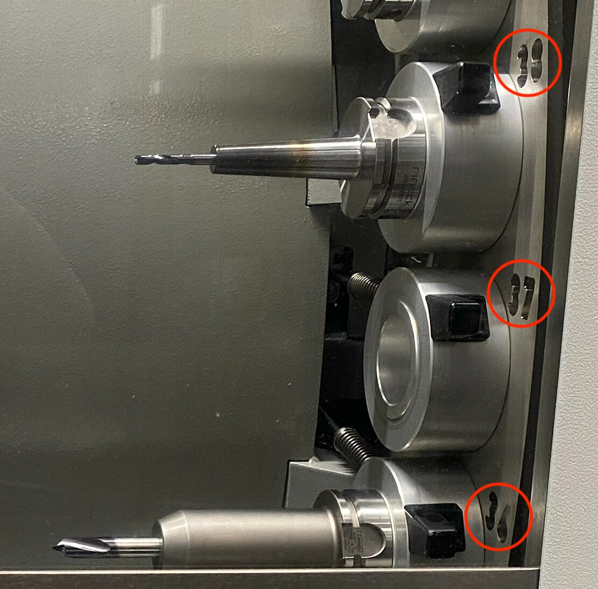
Um das Magazin zu drehen kann man den unten gezeigten Schalter verwenden:
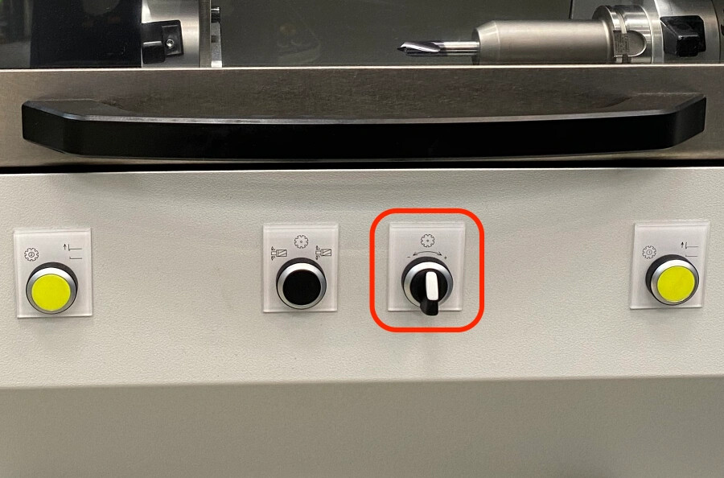
In der Magazinliste:
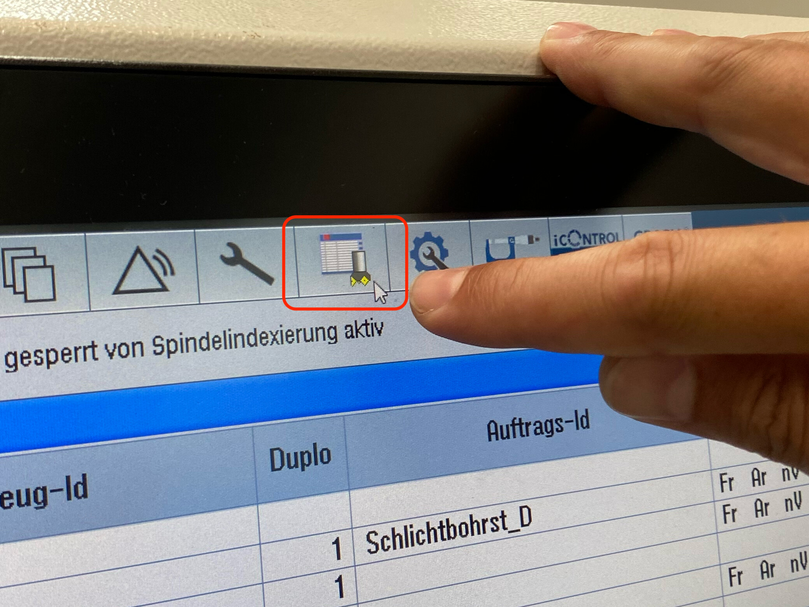
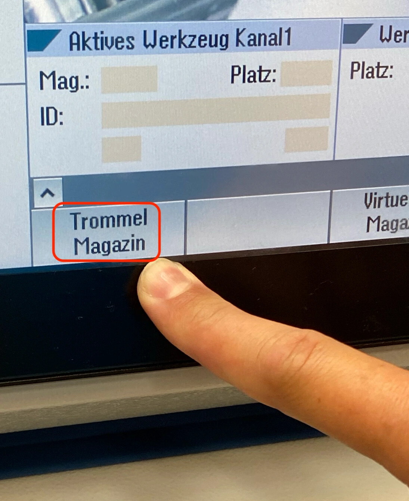
auf den freien Eintrag für die Werkzeugnummer klicken:
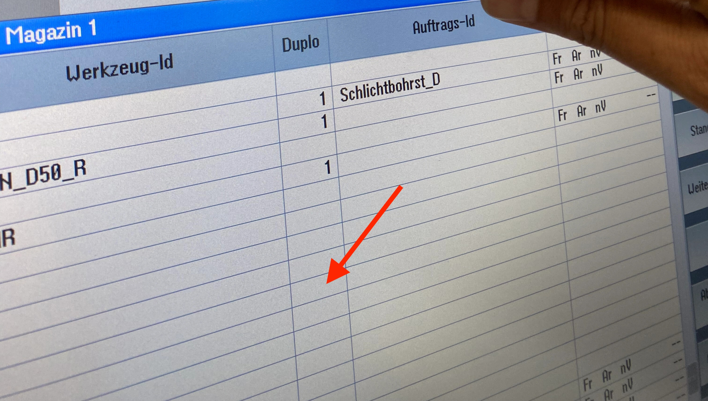
und den Button Aufrüsten drücken um ein neues Werkzeug einzurichten oder um Eines aus dem Archiv zu importieren.
Bei den Daten vom Werkzeug kann z.B. folgende Auswahl getroffen werden (solange man das Werkzeug nicht für einen Eingriff verwendet):
- Duplonummer muss immer 1 sein
- Schnittstelle: Normal
- Name: Beliebig (ein markanter Name hilft später beim Holen der Daten aus Archiv)
- Längenkategorie: 250 mm (hier darauf achten, dass das Tool nicht länger als 250 mm ist, besonders wenn man es in die rechte Trommel mit geringerer Breite gibt)
- Durchmesserkategorie: klein
- Werkzeugtyp: Bohr oder Fräßwerkzeug
- Durchmesser und Länge des Werkzeuges (ungefähr) eingeben
Die Eingabe sollte man dann mittels des Input-Buttons bestätigen
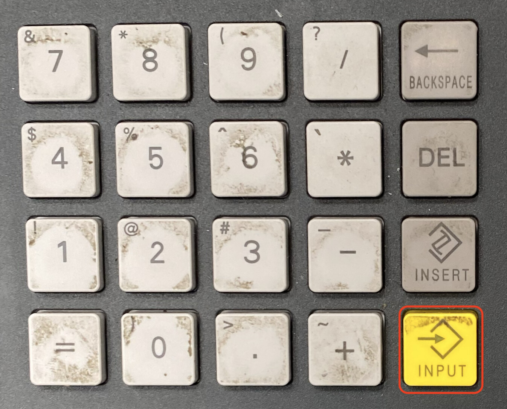
Danach noch Ohne Geometrie (kein Crash-Schutz!) auswählen
Auf „Aufrüsten“ klicken; Das Werkzeugmagazin sollte jetzt automatisch auf die korrekte Stelle für die gewählte Werkzeugnummer fahren
Magazintür öffnen
Werkzeug einspannen
Zum Entfernen beziehungsweise Spannen des Stifts der das Werkzeug festhält bitte folgenden Button drücken:
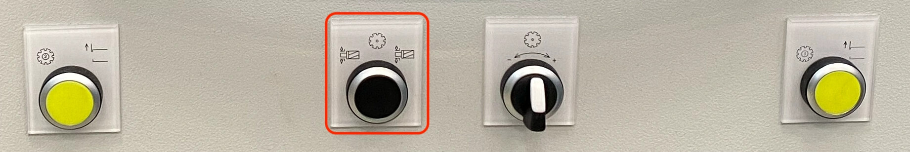
Beim Einspannen ist darauf zu achten, dass absolut kein Spalt entsteht.
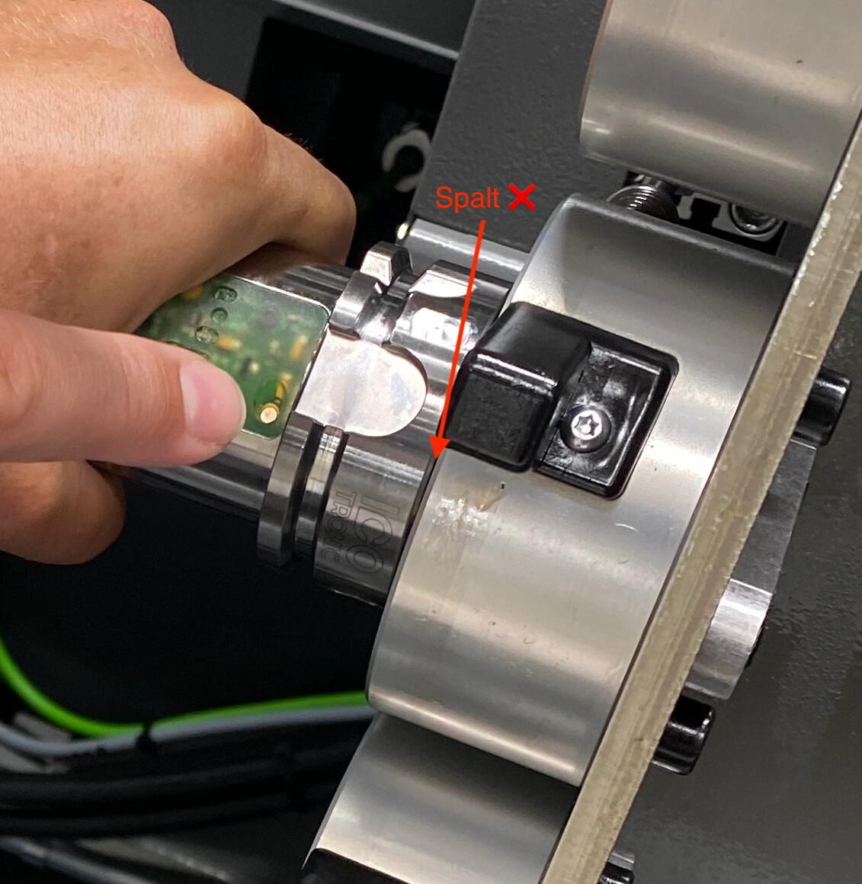
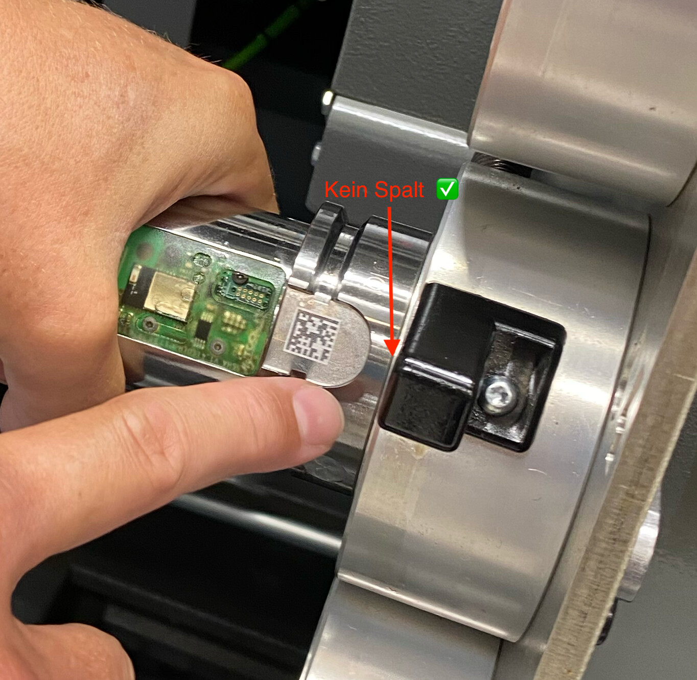
Die Magazintür schließen
1.4 Programm Laden
Auf das Programm-Icon klicken:
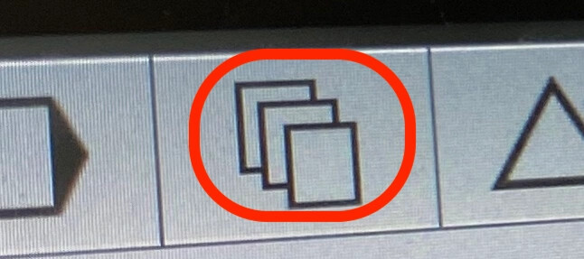
Programm wählen:
MCHOME ; Zu Homepoint fahren FOR GD[1]=1 to 1 ; Einfache Loop (1 am Ende ersetzen fuer mehrere Durchgaenge) TLCH1("Rene_Test_1",0,,1,,,,) ; Werkzeug Rene_Test_1 einwechseln M0 ; Pause TLCH1("D4_EG",0,,1,,,,) ; Werkzeug D4_EG einwechseln M0 ENDFOR TLCH1 ; Werkzeug auswechseln TLPREP1 ; Werkzeug zurueck ins Magazin MCHOME M30Sicherheitshalber die erste Zeile des Programms markieren, damit Programmausführung nicht mitten im Programmcode startet
Den Button G00 aktivieren:
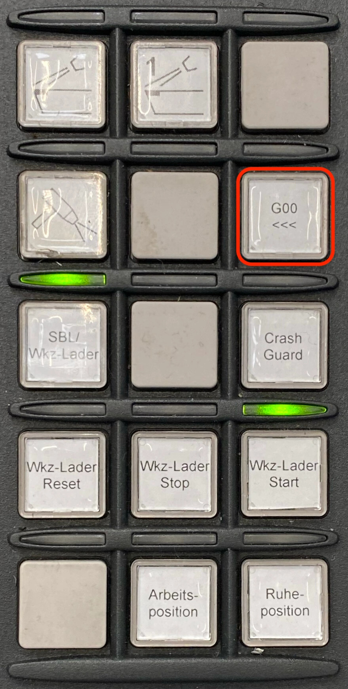
damit sich die Ausführung des Programms verlangsamt.
Darauf achten, dass der Vorschub (auf einem geringem Level) aktiviert ist:
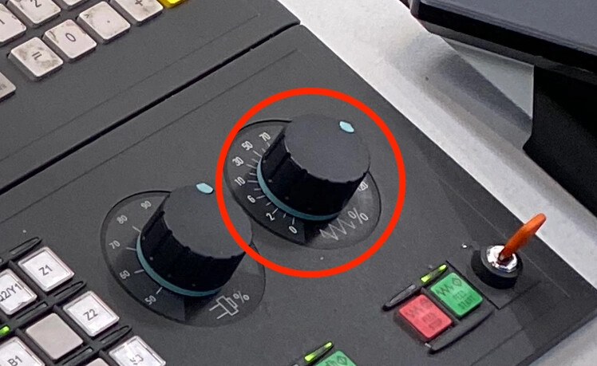
Der Drehschalter sollte bei der Programmausführung immer im Auge behalten werden, damit die aktuelle Programmausführung – mittels Vorschub 0 – schnell abgebrochen werden kann.
Den Button CYCLE START drücken:
um die Programmausführung zu beginnen
1.5 Zusätzliche Information
Die Maschine wird von Gerhard Wiesinger betreut. Um sich zu informieren ob die Maschine für eine bestimmten Zeitraum zur Verfügung steht kann man sich bei ihm (bevorzugt per Telefon) melden.